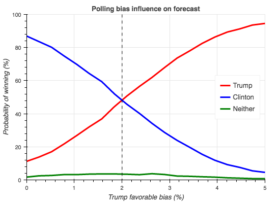
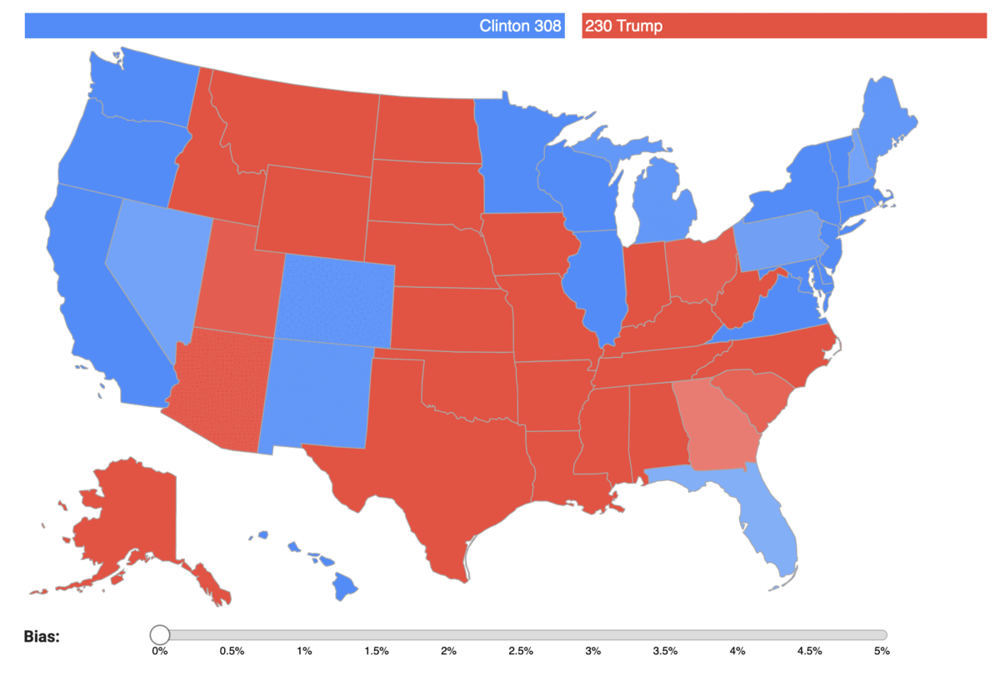
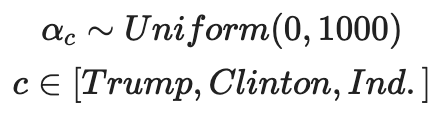
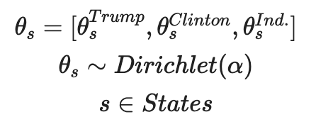
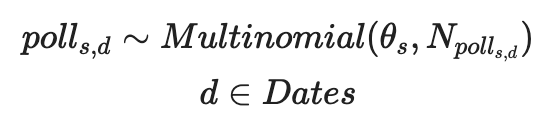
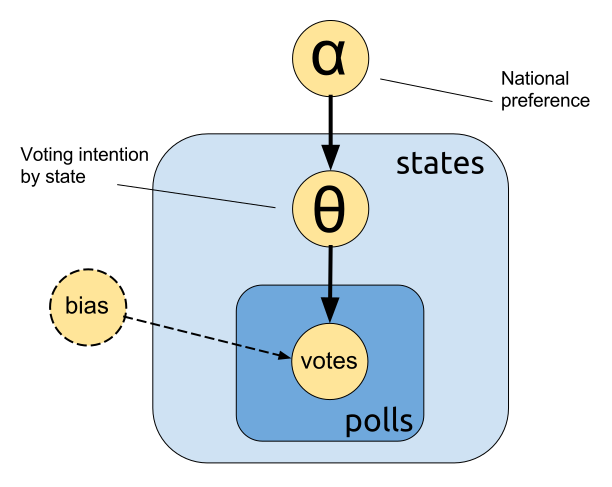
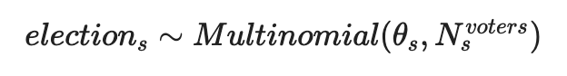
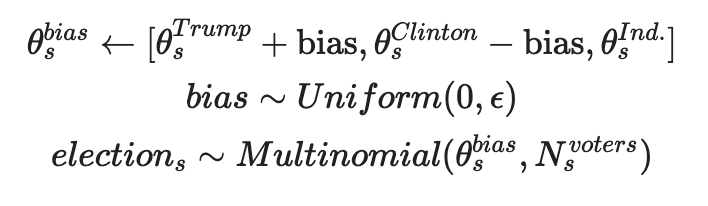

We use a hierarchical Bayesian model to show how a simple pro-Trump bias has a huge effect on forecasting election results. See the discussion on HackerNews.
US presidential elections
Unlike other countries, where presidential elections follow a simple majority rule, the American election follows a different set of rules that makes it very hard for outsiders to understand what is going on. However, the idea is quite simple: each state has a number of electoral college votes, totaling 538 votes across the nation. The winner candidate of each state election takes all of its electoral college votes (with two exceptions). If a candidate receives 270 electoral votes or more overall, he or she wins the election. This makes the election an interesting forecasting problem. Instead of predicting the total number of votes in each candidate, the problem is forecasting the results of each state individually.
Our interest is not to forecast the 2016 election, which is not a random variable anymore (spoiler alert: Trump won). We want to show how a Bayesian forecasting model works, and propose a modification that explains why statistical models would fail so badly if there were polling biases.
Polling
In theory, a poll should randomly sample the voting population. However, in practice there are several possible polling problems that can compromise their use in naive statistical analyses:
- Shy Tory and Bradley effects: Voters are not comfortable with revealing their particular preference.
- Selection bias: People who answer the pollsters are from an unrepresentative subgroup (e.g. people who answer landline phones).
- Stratification errors: Wrong subpopulation determination when doing stratified sampling.
- Candidate and (non)-voting correlation: As voting is not mandatory, the presidential preference of some people may be correlated with their chance of (not) voting.
- Temporal preference change: The preferences change over time (a lot of people make up their minds in the last week).
- Sample noise: Any sample from a population will be noisy and its statistics will not be identical to the population statistics.
Simple forecasts usually only consider the last item when estimating the margins of error or uncertainty. If you only consider this and nothing more, multiple polls will be treated as independent and unbiased, and the more polls you use, the smaller the forecasting errors will be, until there is almost certainty. The other effects are biases that will make the average of multiple polls unreliable and possibly useless. As they are not directly available for modeling, the only way to estimate them is by making strong assumptions or using polling results from previous elections. We do not attempt to model exactly those issues here, we rather include all of them in a bias term that is shared across all polls, and show that even a small bias term favorable to Trump completely changes the forecast.
Forecast
We leave the details of our hierarchical Bayesian forecasting model at the end, for the advanced reader. Now we show the results of its forecasts. However, depending on which polls we include, we have very different results. The polls to use in a forecasting model should be recent and of good quality (conducted with appropriate methodology and with past successes). As a proxy of quality, we use the grades from 538.
We found that the simple choice of which polls to use has a very large impact on the probability of victory of each candidate:
| Polling choice | Clinton | Trump | Neither |
|---|---|---|---|
| Last poll with good grade | 87.3% | 10.5% | 2.2% |
| Polls with the best 3 grades (over the last month) | 99.3% | 0.6% | 0.1% |
| All polls from last week | 100.0% | 0.0% | 0.0% |
We consider polls with good grades to be above B, but this is not possible for some states, so we use a more tolerant definition in those cases. When we say last week or last month, we mean from the Election Day (Nov 8, 2016).
By aggregating the polls with different weights (e.g. according to their quality or distance from election), we would have endless forecasting possibilities, which explains the diversity found in the media before the election:
- New York Times: 85% Clinton, 15% Trump
- Huffington Post: 98% Clinton, 1.7% Trump
- Princeton Election Consortium: 99% Clinton
- 538: 71.4% Clinton, 28.6% Trump
Of the mainstream forecasters, only 538 cannot be included in the bucket of certain Clinton victory. Notice that the other forecasts are consistent with our own results shown in the previous table. How come the forecasters, including us, made such egregious mistakes? As in many statistical problems, the answer lies with the data: garbage in, garbage out.
Bias impact
We encompass all possible polling issues in a general bias term. We use a bias term that is favorable to Trump on election day because that is clearly what happened on November 8. This can be interpreted as a hidden preference for Trump that is not captured by the polls by all the issues explained before. Instead of fixing the bias to an arbitrary value, we use a uniform random variable. We start with zero bias, where Clinton is almost surely the victor, and increase its span until Trump is almost certainly the victor:

We see that even a small polling bias has a huge effect on the election forecast. This explains why 538 had a more favorable Trump forecast as they included a polling bias and did not treat the polls as independent samples, but this also indicates that even 538 probably underestimated the polling biases.
You can check for yourself how the bias impacts the results of each state election on the map below. For each state we forecast the predicted percentage of votes of each candidate, with varying bias:

Hierarchical Bayesian forecasting model
We can use a hierarchical Bayesian model to aggregate the information of each state poll to form a globally coherent forecast. Overall, each poll’s likelihood is modeled as a multinomial, with Dirichlet prior (per state) and uniform hyperprior (per nation). This way, prior information is shared across states and we can use weakly informative hyperpriors. We start with an overall national preference over each candidate, modeled as three independent wide uniform distributions:

Then, we have the voting intention in each state, with the national preference as prior:

Finally, each poll is modeled as one independent sample of the voting intention of the state:

We infer the posteriors of the unknown parameters (state voting intentions and national preferences) given the observed variables (the polls we decided to include). The posterior is our knowledge of the unseen variables after observing statistically related variables. Depending on the choice of which polls to include as observations, as we explained before, the posteriors and thus the forecast will be different.

To forecast the probability of each candidate winning the state election, we use the same multinomial likelihood that was used for the inference. However, now the voting intentions are the posterior given the polls, and number of voters is chosen to match 2012 election numbers. Thus, for each state we sample the predicted number of votes of each candidate on election day using the following formula:

The candidate with more votes takes all the electoral colleges of the state (we ignore the particularities of Nebraska and Maine). We sum the electoral colleges votes of each candidates, and if a candidate wins 270 votes or more, he or she is the winner. We repeat this process multiple times in order to determine the probability of each candidate winning the election.
To add the bias term in our forecast to account for all the polling issues already cited, we make a simple change to the predictive model:

This bias always stochastically favors Trump. We must subtract the same value from Clinton in order to guarantee θbias remains a valid probability simplex. In our experiments above, we vary ϵ from 0 to 5%.
Stan Code
Take a look at our code and feel free to play with it. Here is how we implemented our model in Stan:
data {
int nb_polls; // Number of polls
int nb_states; // Number of states (51 because of D.C.)
int nb_candidates; // Number of candidates (3: Trump, Clinton, Ind.)
int polls_states[nb_polls]; // Poll -> state map
int votes[nb_polls, nb_candidates]; // Polled votes for each candidate
int nb_voters[nb_states]; // Number of voters for forecasting
real bias; // Polling bias
}
parameters {
simplex[nb_candidates] theta[nb_states]; //1 - Trump, 2 - Clinton, 3 - Ind.
vector[nb_candidates] alpha;
}
model {
for(c in 1:nb_candidates)
alpha[c] ~ uniform(0, 1000); // Weakly informative hyperprior
for(s in 1:nb_states)
theta[s] ~ dirichlet(alpha); // Dirichlet prior per state
for(p in 1:nb_polls) // Multinomial observations (polled values)
votes[p] ~ multinomial(theta[polls_states[p]]);
}
generated quantities {
int votes_pred[nb_states, nb_candidates]; // Predicted number of votes on election day
real epsilon[nb_states]; // Bias random variable
simplex[nb_candidates] theta_bias[nb_states]; // Biased voting intentions
// The deltas below are used to ensure that the biased thetas form a valid simplex
real delta_t[nb_states];
real delta_h[nb_states];
real delta[nb_states];
for(s in 1:nb_states) {
if(bias == 0.0)
epsilon[s] <- 0.0;
else
epsilon[s] <- uniform_rng(0, bias); // Bias value for this state
// We must ensure that theta will remain a valid probability simplex,
// so we limit delta in a way theta will never be below 0 or above 1
delta_t[s] <- fabs(theta[s][1] - fmax(0.0, fmin(1.0, theta[s][1] + epsilon[s])));
delta_h[s] <- fabs(theta[s][2] - fmin(1.0, fmax(0.0, theta[s][2] - epsilon[s])));
delta[s] <- fmin(delta_t[s], delta_h[s]);
theta_bias[s][1] <- theta[s][1] + delta[s];
theta_bias[s][2] <- theta[s][2] - delta[s];
theta_bias[s][3] <- theta[s][3];
votes_pred[s] <- multinomial_rng(theta_bias[s], nb_voters[s]);
}
}Conclusion
We have found that even a modestly sophisticated statistical model does very little to counter unreliable data. A proper forecasting model for the American elections must include polling biases, as we have shown in a general way. To arrive at a precise number, you must either make assumptions on the polling methodology, or calibrate the polls weights using their historical reliability. This could be the reason that 538 had Trump winning at the highest probability of the mainstream media. We have also to consider that when you forecast 70% probability of winning, the prediction is expected to fail 30% of the time, so it is hard to evaluate models and forecasters using only one observation.
Even though the 2016 election was one of most surprising polling misses in recent years, the result was not a black swan. Nassim Nicholas Taleb pointed out, before the election, that the mainstream forecasts were not reliable due to their significant volatility. According to his model based on option theory, this volatility should have pulled the probabilities toward 50-50. As a follow-up, if there is interest, we want to explore a time-series model where the voting intentions follow a random walk. To do this, we need to change the underlying model to allow the unseen random walk influence the polling results. Following Andrew Gelman’s suggestion, we can change the Dirichlet prior to a softmax prior, and then we can make the softmax parameters follow a random walk.
Acknowledgements
This blog post was written with the help of Ramon Oliveira back when we were working in a data science consulting company (Datart) that we co-founded together.